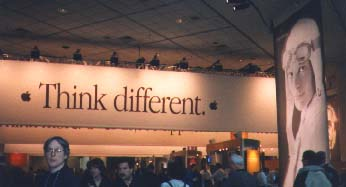
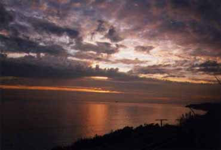
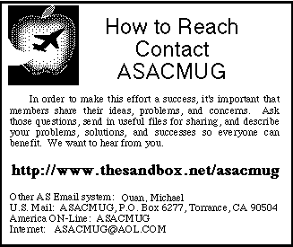

Table of Contents
- Letter from the Editor
- Macworld Expo SF 1998
Letter from the Editor
The previous meeting notice reflected my thoughts on the Mac situation at AlliedSignal as we enter 1998. In contrast, this year's MacWorld Expo was rather hopeful. While reflecting the troubles Apple has had the past two years, other indications pointed to the continuing strength of the Mac OS market, as over 50 new products were introduced to 68,000 attendees, including a major release of Microsoft Office.
This is a short newsletter, primarily consisting of first-hand thoughts gathered during the San Francisco MacWorld Expo, January 6-9, 1998.
Alex
Morando
Newsletter Editor
Has Apple hit bottom?
Going into 1998, even the most hardcore Mac fans have to wonder if Apple has hit bottom - in dwindling sales, financial losses, layoffs, negative and often unjustified press beatings, and the unpredictability of Steve Jobs. Despite these misfortunes, Apple has a lot to be thankful for - the best operating systems in the industry, the best hardware and processor technology, dominance in some markets, the continued enthusiasm and loyalty of Mac customers everywhere, and the unpredictability of Steve Jobs.
The high point of the Expo occurred during the first keynote. Interim CEO Steve Jobs accepted an Eddy Impact Award for 1997. He proceeded to provide updates on Apple's new products, including the G3 Macs and QuickTime 3.0. Increased sales due to the Apple Store and CompUSA were also highlighted. Their new manufacturing systems were able to overcome Apple's traditionally weak forecasting systems. From an estimate of 80,000 G3 machines, Apple actually shipped over 130,000 G3 machines. From 3% last October, CompUSA's Mac CPU sales last December was an amazing 13%.
Four showcase applications were demonstrated. The bulk of that time was taken up by Ben Waldman showing the much improved Microsoft Office 98, which for the first time, is ahead of the Windows version and offers many Mac-first and Mac-only features such as active assistants, QuickTime support, drag-and-drop across applications (not just Microsoft ones), self-repairing applications, and better performance than their Windows equivalents.
At the end of the keynote, Jobs gave out the big news Apple made a $45 million dollar profit on $1.6 billion dollars in sales, surprising financial analysts predicting a $20-$30 million dollar loss. This was greeted by a standing ovation and cheers. It is my firm belief that Jobs is the only one capable of leading Apple out of their current troubles and should drop the "Interim" from his title. The press conference later that day indicated that this profit is real and sustainable. We can only hope that the next quarter is just as good.
On the Show Floor
After the keynote, I spent time roaming the huge South Hall and the smaller North Hall. For the first time in memory, the show space was appreciably smaller than previous years. Large sections of the aisles were empty, often filled by tables and chairs for attendees to sit and eat the overpriced food. There was a rather large section of South Hall that looked like a last minute cancellation from a company once considered the heir of Apple's guerrilla computing image.
The show was small enough that I managed to cover all the booths on the first day. The second day was taken up with detailed visits to some booths and some shopping, marking the first time I finished the Expo in two days, instead of the usual three to four days. In a less than encouraging note, many of the vendors I was interested in did not show up. My interest in science/engineering software and programming tools was not addressed. With less emphasis on Rhapsody, some vendors decided to skip this year's show. In addition to seeing less of my favorite companies, there was more emphasis on Apple's core markets of education and publishing. I have some interest in companies like Adobe and Macromedia, but I have seen most of them before and knew which ones to ignore, like the Microsoft booth. I was just there long enough to get their free CD.
Be - After the takeover of Apple by NeXT, the importance and visibility of Be seems to have faded. However, their OS is quite a technological achievement, and their booth was filled with a few third party applications, and O'Reilly was selling the BeOS book.
BeeHive ADB I/O - a geek-lovers delight. A multi-function input/output box to connect your Mac to the real world. This device enables your Mac to control devices such as alarms and appliances, and receive readings from switches and thermostats.
TechWorks Power3D - This card does one thing and one thing only - it accelerates games written for the 3Dfx graphics chipset. Since the 3Dfx is the dominant acceleration method in the PC world, it makes it easier for developers to develop Mac versions able to take advantage of 3D effects. 3Dfx-aware games include Quake, Myth, Carmageddon, and F-18 Hornet 3.0.
Castlewood Systems - This startup company introduced the Orb. For under $250, you get a removable 2.1 Gb drive (parallel port or SCSI-2). The great feature is that 2.1 Gb cartridges are expected to cost only $30, making it the most cost-effective hard disk storage system bar none. However, we will have to see whether the Orb's reliability and performance are as good as the hype claims them to be.
Developer Central - Again, DC was the place to be to get the latest product news and software upgrades for the year. I visited BareBones Software, makers of the awesome BBEdit text/HTML editor, Apple Computer developer relations to get some information about Rhapsody. They said that the Premiere release has now been renamed to "Customer Release 1" and should be available by the end of June. Many former NeXT developers were showing their Rhapsody applications at Developer Central. Credit goes to Xplain Corporation for putting together another great pavilion.
Apple Booth - This year's Apple Booth had the unmistakable influence of Steve Jobs - it exuded class and style. There were few walls and everything was easily accessible and seen. Instead of having two or three theaters showing off Apple technology, there was one large theater with a large enough screen and open space to accommodate overflow crowds. Demonstrations included MacOS, Rhapsody, and G3 machines. On either side were PowerBooks connected to the Apple Store, where you could place your orders. At one end of the booth was an artificial pond showcasing Newton's ability as a data acquisition platform. A very nice and informative layout, except for the hapless HR people recruiting for nonexistent jobs at Apple.
NewerTech - The other recipient of the Eddy Impact award was Mike Rosenfelt, former marketing vice-president at Power Computing. NewerTech hired many of Power's engineers after the buyout; the result is the MaxPowr G3, the first affordable G3 upgrade card for NuBus PowerMacs (6100/7100/8100). Starting at $499, the cards run from 210 to 240 MHz, and include a 512K or 1 Meg backside cache running at half the CPU speed. The booth exhibited PowerMac 6100's running with a MacBench 4.0 score of over 800, eight times faster than with the original processor. The secret is that the backside cache running at 105 MHz more than compensates for the slow 30 MHz motherboard bus. This is certainly one upgrade I'm looking forward to - my four-year old Mac will be as fast as Apple's latest machines and still cost less.
Off the Show Floor
Apple/Microsoft party - This was held the first day (Tuesday) at the Galleria Design Center to celebrate the new relationship between Apple and Microsoft and to introduce MS Office 98 and Internet Explorer 4.0 to the press and public. Thanks to the West Orange County MUG, I was able to get a ticket to the event. Unfortunately, I was the only one, and the entire ASACMUG executive committee was denied entrance at the door. We then left and gave my one ticket to a desperate lady waiting outside. I heard it was a good party - even Steve Jobs spoke for a few minutes.
|
The chances of me using Internet Explorer 4.0 were Slim and None. That night, Slim left town. |
BMUG - The non-profit users group managed to have a booth this year, even with their current financial problems. I listened to a talk by Executive Director Hal Gibson, as he explained how they got into their current mess of being over $100,000 in debt, although he was expecting that debt to be cut in half by the end of March. Many in the audience were optimistic and suggested many good ideas and it looks like BMUG will continue to provide their services, both in the Bay Area and around the world. I love their products, especially their newsletter and BBS.
UGC breakfasts - This year, breakfasts were sponsored by the UGC, Adobe, and Symantec. Mike Quan and I attended the UGC breakfast, while Kevin Elwell and Tracy Johnson attended the Adobe breakfast. The UGC breakfast demoed QuickTime 3.0 and two AppleMasters gave presentations - Jim Ludtke and David Mash, whose contributions to society through the use of the Macintosh are publicized and celebrated. Afterwards, many prizes were raffled off, and Mike managed to win something.
Cannery Row - I did take some vacation hours to go to Macworld Expo, so I decided to spend some time in Monterey on the way back. I had never been to Cannery Row and the Monterey Bay Aquarium, and I found it to be very nice, relaxed, and devoid of tourists on a Thursday morning. Unfortunately, I was unable to see any sea otters due to El Ñino. I spent enough time in Monterey to cancel my planned drive through Big Sur and took US-101 instead. As I drove through the Gaviota curve, the temperature rose to a comfortable level and I was able to shed my sweaters. I was back in Southern California.

Thanks for reading this far. See you at work, and hopefully, at next year's MacWorld Expo! (January 5-8, 1999)
